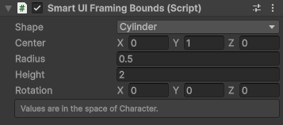
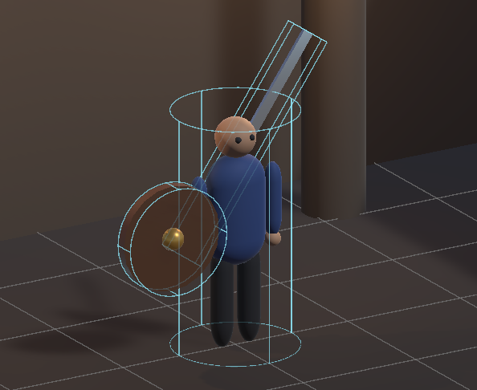
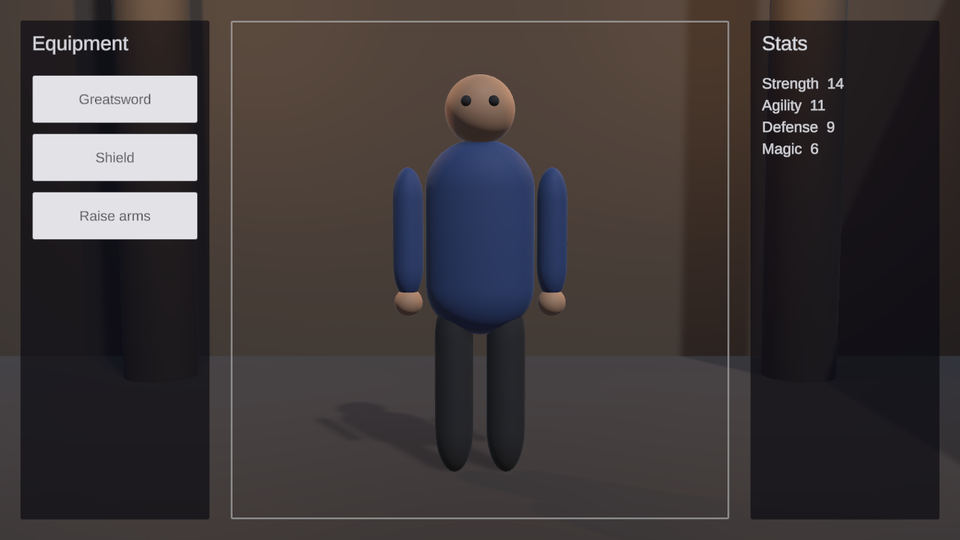
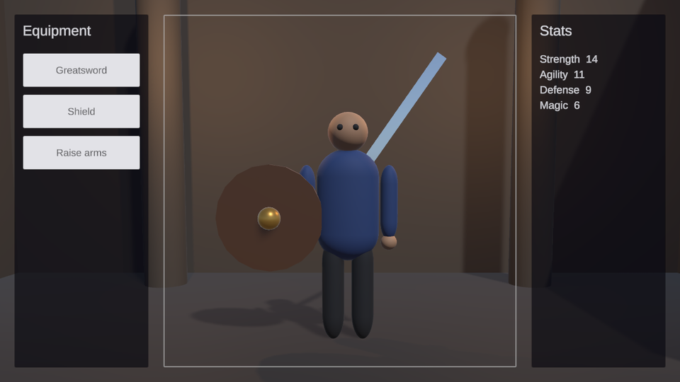

Smart UI Framing Bounds component
Describes the volume of a character or an object that a Smart UI World Follower keeps inside its Target, or that a Smart UI Mesh Fitter fits into its parent Rect Transform. Typical use is a character screen, a dress-up screen or a shop where the character must always be seen whole, between the menu panels, on every screen shape.
Add the component to the GameObject that has the Smart UI World Follower or the Smart UI Mesh Fitter and type in the volume the character needs, including the space its animations and poses use. The volume is drawn in the Scene view and can be resized with its handles.

| Field | Description |
|---|---|
| Shape | Cylinder: a cylinder around the up axis. Its outline does not change while the character turns, so a character on a turntable keeps its size. Rotated, it fits round flat objects such as a shield. Box: a box, for objects that are not upright or not round. Sphere: its outline does not change however the object turns, for objects that tumble, such as a spinning item in a shop. |
| Center | Center of the volume. |
| Size | Size of the box. Used by Box. |
| Radius | Radius of the cylinder or the sphere. Used by Cylinder and Sphere. |
| Height | Height of the cylinder along its axis. Used by Cylinder. |
| Rotation | Rotation of the box or the cylinder in degrees, so the volume can lie along a diagonal object, such as a sword held at an angle, or face the camera like a shield, instead of wrapping it in a large upright volume. Used by Box and Cylinder. |
All values are in the space of the nearest Smart UI World Follower or Smart UI Mesh Fitter, also when the component is on a child object. Framing bounds on a sword held in an animated hand therefore stay still while the hand moves, and the framing does not breathe with the animation.
The framing bounds of a character in the Scene view: an upright cylinder around the body, a box rotated along the greatsword and a cylinder rotated to face the camera around the shield.

With the Mesh Fitter
On a Smart UI Mesh Fitter, framing bounds replace the measured Renderer bounds: the Fit Mode, Alignment, Depth Offset and Use Bounding Sphere work on the typed-in volume. Use it for animated models in the UI, so they keep the same size while they move. The follower settings below are not used there.
Why the volume is typed in
The framing is not measured from the meshes. Animations, cloth and particles change the mesh bounds every frame, and a framing that follows them pumps in and out. A typed-in volume describes what you want to keep visible, and it only changes when you change it.
Equipment and poses
The follower combines all enabled framing bounds on its GameObject and its children:
- Equipment: give an item prefab framing bounds of its own, for example a box around a greatsword carried on the back. When the item is placed under the character, the framing widens to include it. When it is removed or disabled, the framing narrows again. No code is needed.
- Poses: the fields can be keyframed in an animation clip, for example a taller volume for a pose with raised arms.
- Code: set
Center,Size,Rotation,Radius,HeightorShapeat runtime, for example to frame only the head while a helmet is chosen.
The follower eases to every new framing over its Framing Transition Time, so equipping an item or changing a pose never makes the view jump.
The same character without and with the shield and the greatsword. The framing widens to include them, and the character stays inside its frame between the menu panels.


Follower settings
These fields of the Smart UI World Follower are used when framing bounds are found:
| Field | Description |
|---|---|
| Framing Padding | Space between the volume and the edges of the Target, in UI units. |
| Fit Height Only | Only the height of the volume has to fit. Use it when the character should keep the same height and wide items may reach past the sides of the Target. |
| Framing Transition Time | Seconds the framing takes to follow a change. 0 follows at once. Changes in edit mode always apply at once. |
With framing bounds the Focus Point is not used: the center of the combined volume is kept in the center of the Target.
Cinemachine and other camera rigs
The follower only zooms and shifts the camera's projection. The camera's position, rotation and lens stay with whatever drives the camera, such as Cinemachine, an animation or your own script. Turn Move Camera off on the follower and let the rig orbit, dolly or tilt the camera: the framing keeps the volume inside the Target from every angle.
Because the follower decides the size, moving the camera closer or changing its Field of View no longer makes the character bigger. It only changes the viewing angle and the strength of the perspective. To zoom in on a detail, for example the head while choosing a helmet, change the framing bounds to that detail instead.
Note
The volume is kept inside the Target, not in front of the scene. A camera that moves behind a wall still sees the wall. Use Cinemachine's deoccluder or keep the camera path clear.